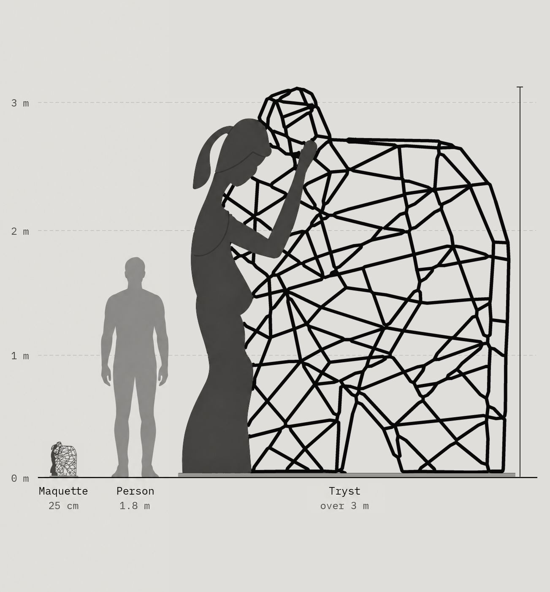
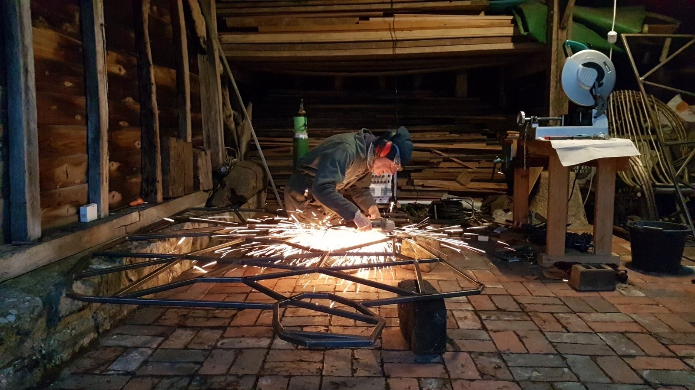
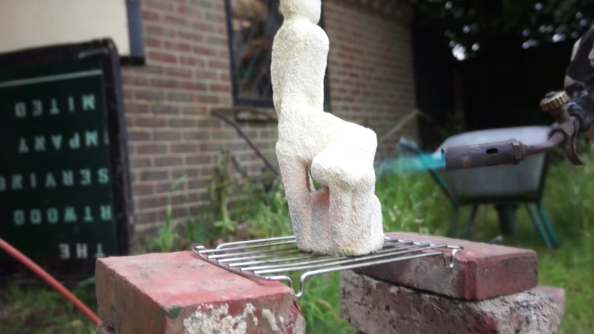
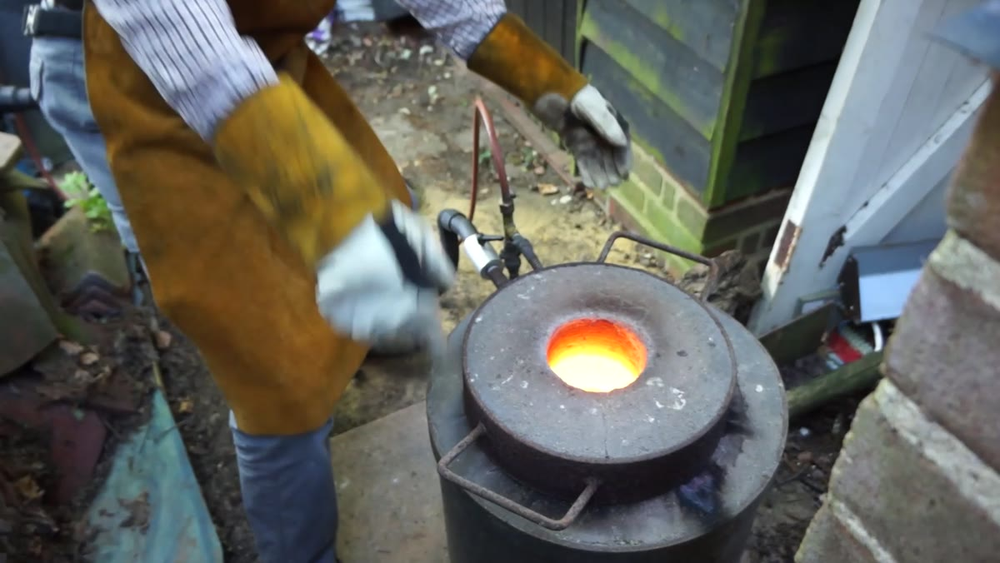
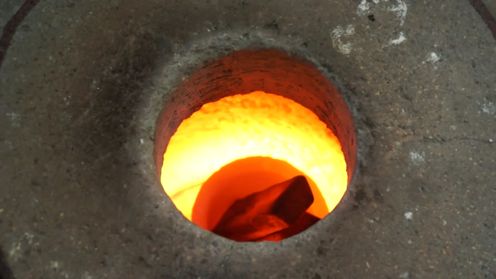
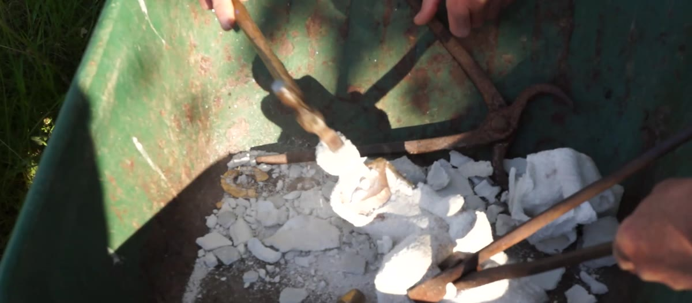
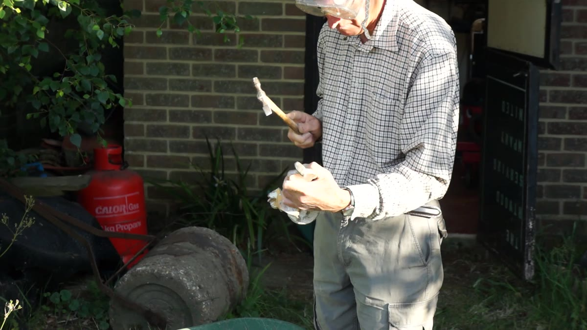
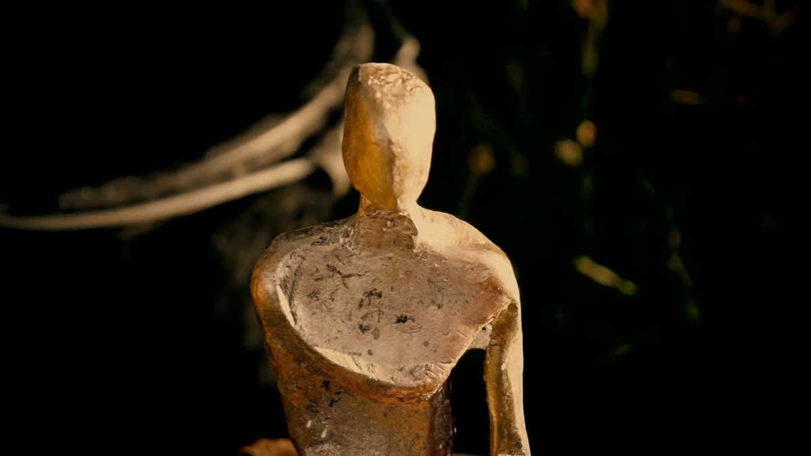

Sculpture
Drawing in space
Michael Joseph's sculpture begins where his charcoal ends — the contour of a figure lifted off the page and rebuilt in steel, bronze and wire.
“How a line fits with a shape, or how a space might contribute to a form.”
The sculptures
25 works 2 views
2 views
 3 views
3 views
 2 views
2 views


 2 views
2 views
 2 views
2 views


Steel · Bronze · Stainless · Jesmonite
Shown in sculpture gardens across Surrey and Sussex. See exhibitions
A single line becomes a linear armature, and the space it encloses becomes as much a part of the form as the metal itself. Negative space is never left over; it is shaped, weighed and composed. Walk around one of these figures and it re-draws itself with every step — solid from one side, almost dissolving into the landscape from the next.
Few artists move as freely between scales, or between processes. An idea may begin as a gestural study in charcoal, become a hand-held maquette on the studio bench, and end as a monumental work in the open air. Tryst stands over three metres tall: a Corten silhouette leaning into an open lattice of welded steel, its surface weathering to a deep, living patina.
And unusually, the bronzes never leave his hands. Michael casts them himself, in his own foundry — lost-wax moulds, a propane blast furnace, silicon bronze poured at over a thousand degrees. It is a rare level of control for a working sculptor: the same person who draws the line pours the metal.
That fluency comes from an unusual formation — an engineering apprenticeship at Rolls-Royce Aero Engines, a career judging speed, height and vector from the flight deck, and a studio whose tools run from a simple brush to a computer-controlled milling machine.

Scale
From maquette to monument

Tryst · Corten steel · Over 3 m high

Steel · the studio
Fabricated in the studio
The large steel works are built by hand in a timber-framed barn: steel section cut, bent and welded into the open lattices that let light and landscape pass through the figure.
Bronze · The foundry
Poured by hand
Very few sculptors cast their own bronze. Michael does — in his own foundry, from wax to finished figure.
From clay to bronze

1Clay to wax
Every bronze starts as a form modelled in clay. A mould is taken from the clay and a wax copy cast from it; the wax is then encased in a heat-proof ceramic shell, and a torch melts it out, leaving a perfect hollow of the figure. The wax is saved and used again.

2Burnout
The empty shell goes into a propane blast furnace and is fired until it glows red — hot enough to receive the metal without cracking.

3The melt
Ingots of silicon bronze are melted in a crucible in the same furnace, until the metal runs clean.
 4
4The pour
The glowing mould is packed in sand and the bronze poured in one steady movement, at well over a thousand degrees.

5Break-out
After an hour cooling, the ceramic shell is broken away and the raw bronze emerges for the first time.

6Clean-up
The last of the ceramic is chipped and brushed away by hand, revealing the casting's surface.

7Chasing & patina
The raw bronze is chased — refined and finished with hand tools — and then coloured with a patina, applied with heat and chemistry, that gives the surface its final depth.
 8
8Suzanne, finished
The finished bronze. Suzanne is one of the figures cast this way, from clay to patina entirely in Michael's own foundry.
Jesmonite
Crest
Jesmonite
Jesmonite lets Michael cast forms that read like carved stone but weigh a fraction as much, and it stands up to the weather. Crest rises from the ground as a single, smooth wave. The same material carries Big Stretch to three metres, and it's the medium Michael teaches in his Creating Abstract Sculpture in Jesmonite course at Art Junction.
Reflection
Stainless steel · one piece, two viewpointsPolished stainless steel that is never quite the same twice: its perspective and form change with whatever is behind it, and with where you stand to look at it.
Materials
Chosen for how they hold a lineCorten steel
A weathering steel that forms its own protective rust. The patina deepens over months outdoors, so the work keeps changing in the landscape.
Bronze, cast in-house
Lost-wax cast in Michael's own foundry: the wax burned out, the mould fired red-hot, silicon bronze poured by hand. Weight, permanence and a surface that takes the light.
Welded & stainless steel
Cut, bent and welded in the studio: the most direct translation of a drawn line into three dimensions, from open lattices to polished stainless.
Jesmonite
A water-based composite that casts crisply and weathers outdoors. Big Stretch stands three metres tall in Jesmonite on a Corten base — a form Michael has also made in mild steel and bronze.
Studies & maquettes
Drawings and small models that led to the finished pieces 3 views
3 views